Unit 1 Thought and Language
Overview
Welcome to Psych 106
We begin this course by reviewing some important information on scientific research methodologies. While this review will be self-guided, it is critical that you understand the important elements that constitute valid and reliable scientific research as it is these methodologies that serve as the backbone for psychological studies.
After taking time to review scientific research methodologies, we will turn our attention to the subject of Thought and Language. Developing an understanding of Thought and Language helps us better understand how we think, how we organize our thoughts and our knowledge of the world around us, and how we communicate and act out on this information.
Topics
This unit is divided into the following topics:
- Review- Scientific Research
- Thinking and Problem Solving
- Cognitive Biases
- Language and Thought
- Animal Language
Learning Outcomes
When you have completed this unit, you should be able to:
- Define key terminology related to principles of scientific research, research designs, and statistics.
- Explain the five characteristics of quality scientific research, and the pros and cons of descriptive, correlational, and experimental research designs.
- Determine how biases might influence the outcome of a study and how experiments help demonstrate cause-and-effect relationships.
- Apply the concepts of reliability and validity to examples and concepts of experimental methods to research examples.
- Assess whether anecdotes, authority figures, and common sense are reliably truthful sources of information.
- Understand what it means for variables to be positively or negatively correlated and how and why psychologists use significance tests.
Activity Checklist
Here is a checklist of learning activities you will benefit from in completing this unit. You may find it useful for planning your work.
Unit 1:
Read and Reflect {-}
- Read Krause et al. (2021). Revel for An Introduction to Psychological Science, 3rd Canadian Edition
- Review UNIT 1 Slides
CLICK HERE
An Introduction to Psychological Science - Chapter 2: Reading and Evaluating Scientific Research
Learning Objectives
- Know the key terminology related to principles of scientific research.
- Understand the five characteristics of quality scientific research.
- Understand how biases might influence the outcome of a study.
- Apply the concepts of reliability and validity to examples.
- Analyze whether anecdotes, authority figures, and common sense are reliably truthful sources of information.
Five Characteristics of Quality Scientific Research
- Based on measurements that are objective, valid, and reliable
- Generalizable
- Use of techniques that reduce bias
- Made public
- Can be replicated
Scientific Measurement: Objectivity(1 of 2)
- Objective measurements (p. 31)
- e.g. weight
- e.g. weight
- Variable (p. 31)
- Measuring variables - Examples
- Functional magnetic resonance imaging (fMRI)
- Blood or saliva
- Self-reporting
- Functional magnetic resonance imaging (fMRI)
Scientific Measurement: Objectivity(1 of 2)
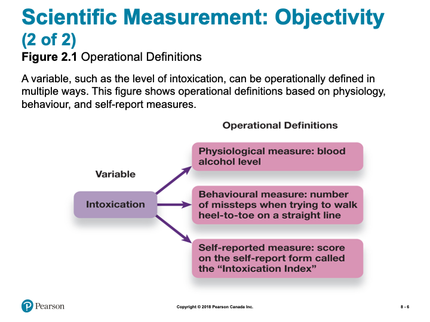
slide showing Operational Definitions
Scientific Measurement: Reliability and Validity
- Reliability (p. 32)
- Consistent and stable
- Consistent and stable
- Validity (p. 32)
- True measurements
Generalizability of Results (1 of 2)
- Generalizability (p. 33)
- Outside the laboratory
- Outside the laboratory
- Study large groups
- Population (p. 33)
- Sample (p. 33)
- Population (p. 33)
Generalizability of Results (2 of 2)
- Best reflection of population
- Random sample (p. 33)
- Random sample (p. 33)
- Settle for easier sample
- Convenience sample (p. 33)
- Convenience sample (p. 33)
- Location of study
- Laboratory research
- Naturalistic research
- Ecological validity (p. 33)
- Laboratory research
Sources of Bias in Psychological
- Research
- Researcher Bias
- Subject/Participant Bias
- Hawthorne effect (p. 35)
- Social Desirability (p. 35)
Working the Scientific Literacy Model: Demand Characteristics and Participant Behaviour (1 of 2)
- What do we know about how bias affects research participants?
- Demand characteristics (p. 36)
- Demand characteristics (p. 36)
- How can science test the effects of demand characteristics on behaviour?
- Backpack scenario
Working the Scientific Literacy Model: Demand Characteristics and Participant Behaviour (2 of 2)
- How can we critically evaluate the issue of bias in research?
- Researcher bias
- Bright rats vs. dull rats
- Bright rats vs. dull rats
- Researcher bias
- Why is this relevant?
- Bias compromises studies
- Placebo effect (p. 35)
- Bias compromises studies
Psych @ The Hospital: The Placebo Effect
- Debate about placebo effect
- “All in their head”
- Actual physiological response
- “All in their head”
- Brain activity in regions involved in pain
- Multiple ways for placebos to affect our responses to pain
Techniques That Reduce Bias
- Anonymity
- Confidentiality
- Inform participants
- Single-blind study (p. 37)
- Double-blind study (p. 37)
Sharing the Results
- Academic journals
- Peer review (p. 37)
- Replication (p. 38)
- Peer review (p. 37)
Five Characteristics of Poor Research (1 of 2)
- Lack of falsifiable hypotheses (p. 38)
- Testability requires faisifiability
- Testability requires faisifiability
- Anecdotal evidence (p. 38)
- weight loss commercials
- weight loss commercials
- Biased selection of data
Five Characteristics of Poor Research (2 of 2)
- Appeal to authority (p. 39)
- Corresponding data?
- Biased expert?
- Corresponding data?
- Appeal to common sense (p. 39)
- Earth is centre of universe
2.2 Learning Objectives
- Know the key terminology related to research designs.
- Understand what it means when variables are positively or negatively correlated.
- Understand how experiments help demonstrate cause-and-effect relationships.
- Apply the terms and concepts of experimental methods to research examples.
- Analyze the pros and cons of descriptive, correlational, and experimental research designs.
Descriptive Research (1 of 2)
- Descriptive data
- From observations
- No attempt to explain why
- From observations
- Qualitative Research (p. 42)
Descriptive Research (2 of 2)
- Case study (p. 42)
- Extensive details
- Lacks generalizability
- Extensive details
- Naturalistic observation (p. 44)
- Self-reporting (p. 45)
- Participant makes the observations
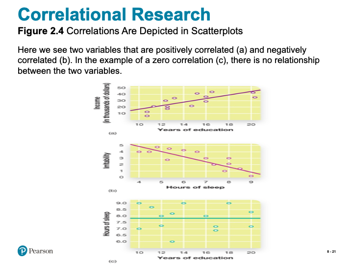
Slide showing correlations depicted in scatterplots
Myths in Mind: Beware of Illusory Correlations
- Illusory correlations (p. 47)
- Crime increases when the moon is full
- Opposites attract
- Gamblers on a “hot streak”
- Stereotypes
- Crime increases when the moon is full
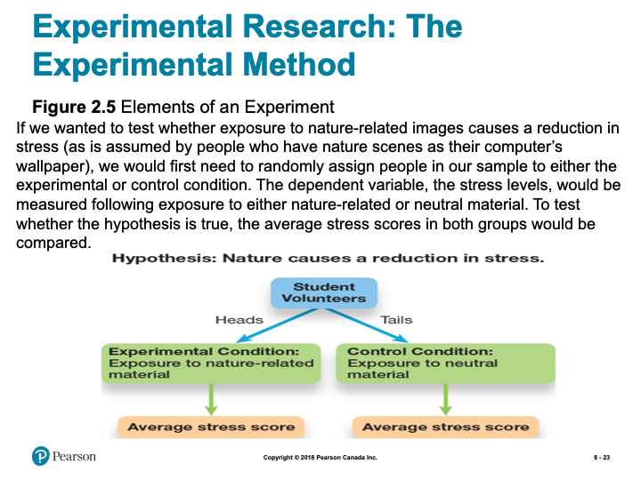
Slide showing - Elements of an Experiment
Experimental Research: The Quasi-Experimental Method
- Quasi-experimental research (p. 49)
- Random assignment not always possible
- Comparing men and women
- Comparing men and women
- Cannot determine cause-and-effect
- Random assignment not always possible
2.4 Learning Objectives
- Know the key terminology of statistics.
- Understand how and why psychologists use significance tests.
- Apply your knowledge to interpret the most frequently used types of graphs.
- Analyze the choice of central tendency statistics based on the shape of the distribution.
Descriptive Statistics
- Descriptive statistics (p. 60)
- Frequency
- Central tendency
- Variability
- Frequency

Slide showing - Graphing Psychological Data

Slide showing - Skewed Distributions

Slide showing - Central Tendency in Symmetrical Distributions
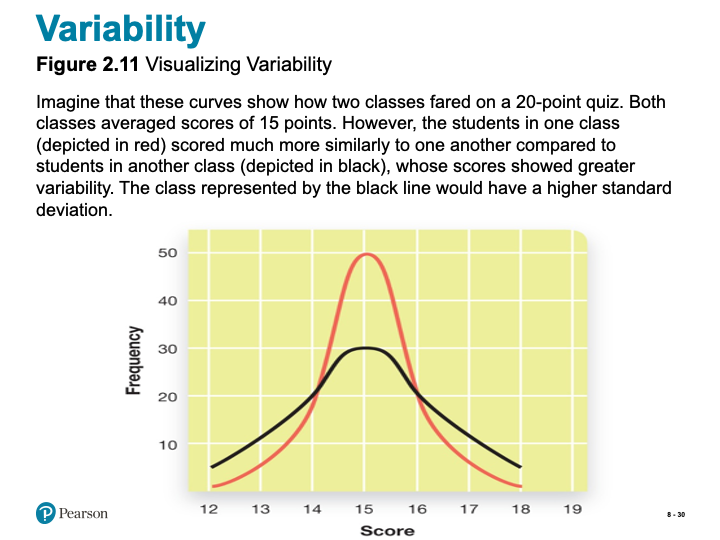
Slide showing - Visualizing Variability
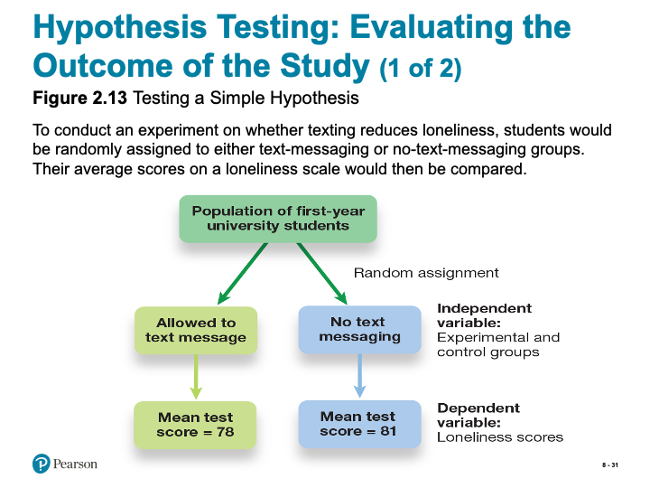
Slide showing - Testing a Simple Hypothesis
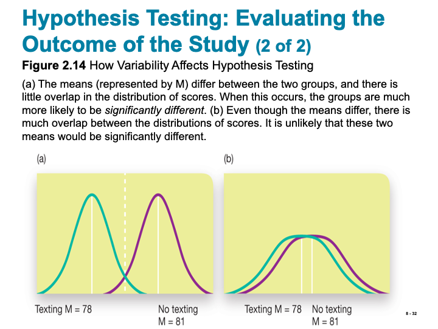
Slide showing - How Variability Affects Hypothesis Testing
True or False?
- T F 1. People more easily detect male prejudice against females than female against males or female against females.
- T F 2. In general, people underestimate how much they really know.
- T F 3. It takes less compelling evidence to change our beliefs than it did to create them in the first place.
- T F 4. The babbling of an infant at 4 months of age makes it clear whether the infant is French, Korean, or Ethiopian.
- T F 5. Some people can write but not read.
- T F 6. Many bilinguals report that they have different senses of self, depending on which language they are using.
- T F 7. Imagining a physical activity triggers action in the same brain areas that are triggered when actually performing that activity.
- T F 8. Only human beings seem capable of insight (the sudden realization of a problem’s solution).
- T F 9. Honeybees do a dance to communicate the direction and distance of a new food source to other bees.
- T F 10. Apes are capable of communicating meaning by using symbols.
Thinking
- Thinking, or cognition, refers to a process that involves knowing, understanding, remembering, and communicating.
- Gr. \(\Phi\rho\omega\nu\epsilon\omega\) (pr. phrones) - to think, to mind; to be of opinion; to take thought, be considerate; to entertain sentiments or inclinations of a specific kind, to be minded; to be in a certain frame of mind; to imagine; to heed, pay regard to; to incline to; be set upon, mind
A little more Greek
- Mind (Gr. \(\Nu\omicron\upsilon\varsigma\)) - the mind, intellect; understanding, intelligent faculty; intellect, judgment; opinion, sentiment; mind, thought, conception; settled state of mind; frame of mind.
The limits of intuition
- A bat and a ball cost $1.10 in total. The bat costs $1 more than the ball. How much does the ball cost?
- A man bought a horse for $60 and sold it for $70. Then he bought the same horse back for $80 and again sold it, for $90. How much money did he make in the horse business?
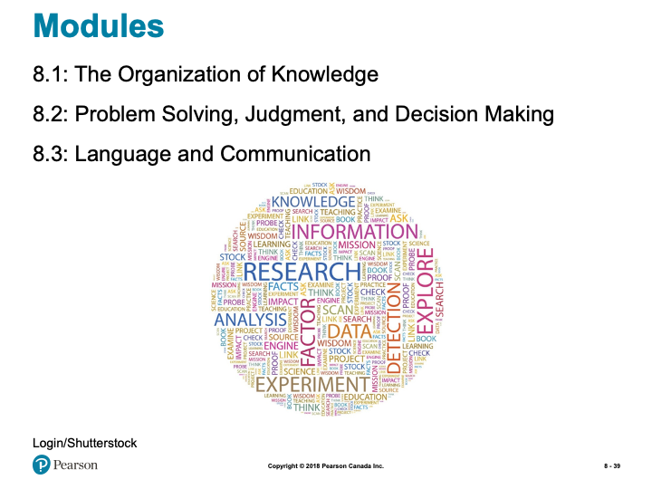
Slide showing - Modules
8.1 Learning Objectives
- Know the key terminology associated with concepts and categories.
- Understand theories of how people organize their knowledge about the world.
- Understand how experience and culture can shape the way we organize our knowledge.
- Apply your knowledge to identify prototypical examples.
- Analyze the claim that the language we speak determines how we think.
Concepts and Categories
- Concept (p. 294)
- Divided into smaller groups
- Divided into smaller groups
- Categories (p. 294)

Slide showing - Using the Definition of a Triangle to Categorize Shapes

Slide showing - Categorizing Objects According to the Definition of Bird

Slide showing - A Prototypical Bird

Slide showing - A Semantic Network Diagram for the Category “Animal”
Working the Scientific Literacy Model: Priming and Semantic Networks (1 of 2)
- What do we know about semantic networks?
- Priming (p. 297)
- Priming (p. 297)
- How can scientists explain priming effects?
- Lexical Decision Task
Working the Scientific Literacy Model: Priming and Semantic Networks (2 of 2)
- Can we critically evaluate this information?
- Strength of priming varies
- Experiments difficult to replicate
- Strength of priming varies
- Why is this relevant?
- Advertising
Categorization and Experience
- Categorization is based on experience
- Efficient process
- But can also result in errors
- Efficient process
Categories and the Brain (1 of 2)
- Categories, Memories, and the Brain
- Category-specific visual agnosia (CSVA)
- Living vs. non-living categories
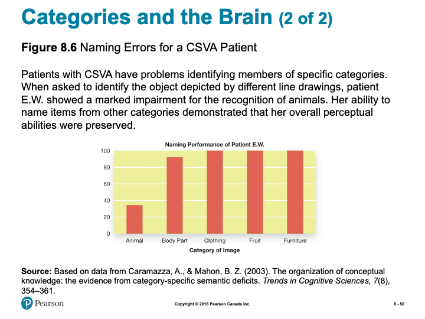
Slide showing - Naming Errors for a CSVA Patient

Slide showing - Your Culture and Your Point of View

Slide showing - Brain Activity Varies by Culture
Myths in Mind: How Many Words for Snow?
- Inuit have many words for snow
- Aput = snow on the ground
- Gana = falling snow
- Exaggerated to dozens of words
- Aput = snow on the ground
- Canadians have many words for snow
- Sticky snow
- Drifting snow
- Yellow snow
- Sticky snow
8.2 Learning Objectives
- Know the key terminology of problem solving and decision making.
- Understand the characteristics that problems have in common.
- Understand how obstacles to problem solving are often self-imposed.
- Apply your knowledge to determine if you tend to be a maximizer or a satisficer.
- Analyze whether human thought is primarily logical or intuitive.
Defining and Solving Problems (1 of 2)
- Problem solving (p. 304)
- Algorithms (p. 304)
- Heuristics (p. 304)
- Algorithms (p. 304)
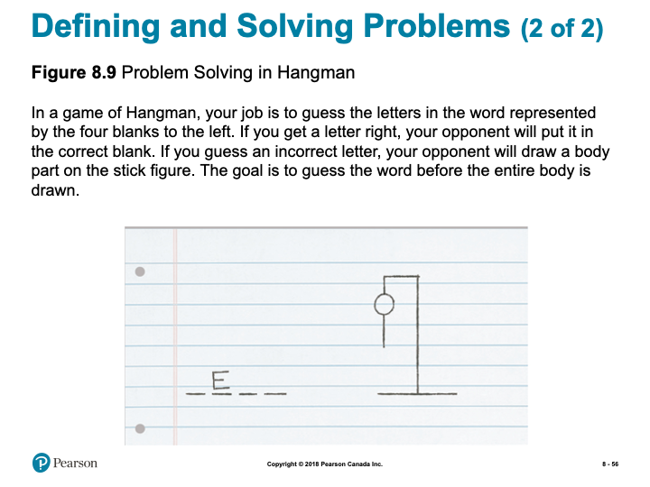
Slide showing - Problem Solving in Hangman

Slide showing - The Nine-Dot Problem

Slide showing - The Five-Daughter Problem
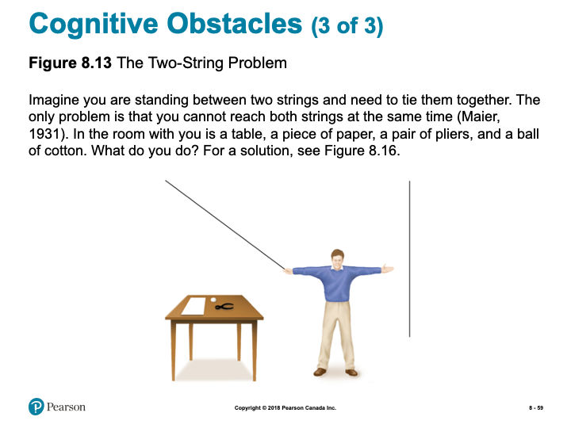
Slide showing - The Two-String Problem
Representativeness and Availability
- Conjunction fallacy (p. 308)
- Representativeness heuristic (p. 308)
- Availability heuristic (p. 308)
Anchoring Effects
- Anchoring effect (p. 310)
- In what year did British Columbia become part of Canada?
- More affected when generated by individual
- In what year did British Columbia become part of Canada?
Framing Effects (1 of 2)
- Decision-making influenced by how problem is framed (p. 310)
- Example: Vaccine A vs. Vaccine B
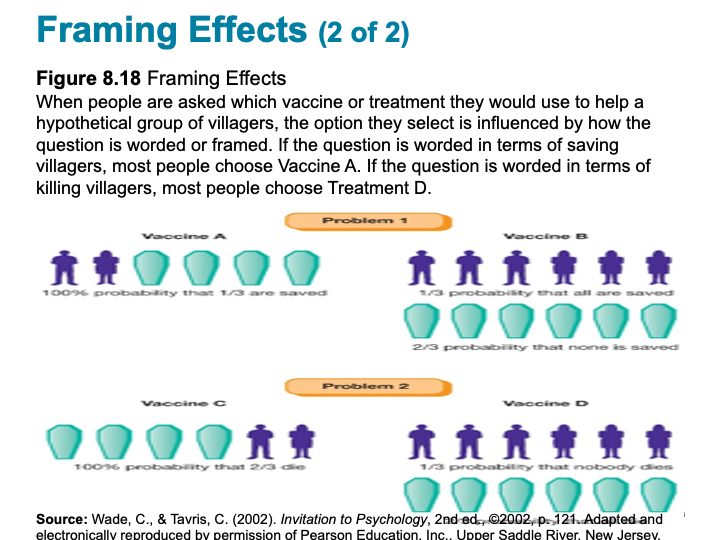
Slide showing - Framing Effects
Belief Perseverance and Confirmation Bias
- Belief perseverance (p. 310)
- Confirmation bias (p. 311)
Can dramatically influence beliefs, especially for complex, emotionally-charged issues (e.g. politics)
What do we know about maximizing and satisficing?
- Two types of consumers
- Satisficers = “good enough*
- Maximizers = evaluate every option
- Satisficers = “good enough*
- Paradox of choice
How can scientists explain maximizing and satisficing?

Slide showing - Satisfaction of Maximizers and Satisficers
Working the Scientific Literacy Model: Maximizing and Satisficing in Complex Decisions (3 of 3)
- Can we critically evaluate this information?
- Maximizers might expect more
- Correlational research
- Maximizers might expect more
- Why is this relevant?
- Planning for the future
8.3 Learning Objectives
- Know the key terminology from the study of language.
- Understand how language is structured.
- Understand how genes and the brain are involved in language use.
- Apply your knowledge to distinguish between units of language such as phonemes and morphemes.
- Analyze whether species other than humans are able to use language.

Slide showing - Two Language Centres of the Brain
Properties of Language
- Language (p. 317)
- Unique features
- Communicate objects and events not in present time and place
- Produce new meanings
- Passed down naturally to children
- Communicate objects and events not in present time and place
Phonemes and Morphemes: The Basic Ingredients of Language
- Phonemes (p. 318)
- “T”
- Morphemes (p. 318)
- Pig, ish, or pigish
- Productivity
- Pig, ish, or pigish
- Semantics (p. 318)
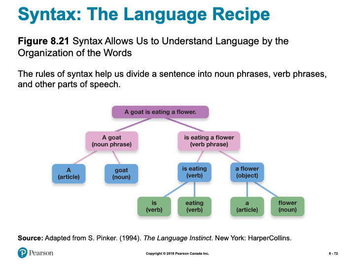
Slide showing - How syntax helps us to understand language
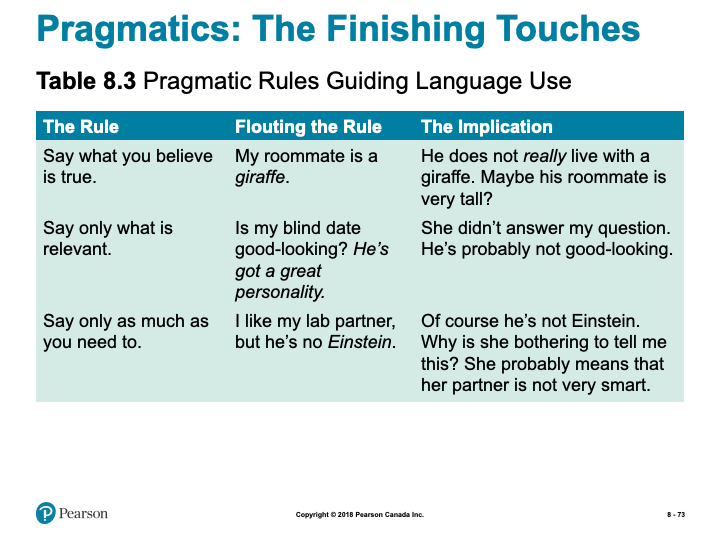
Slide showing - Pragmatic Rules Guiding Language Use
The Development of Language (1 of 2)
Infants, sound perception, and language acquisition
- Identifying Sounds
- Fast mapping (p. 320)
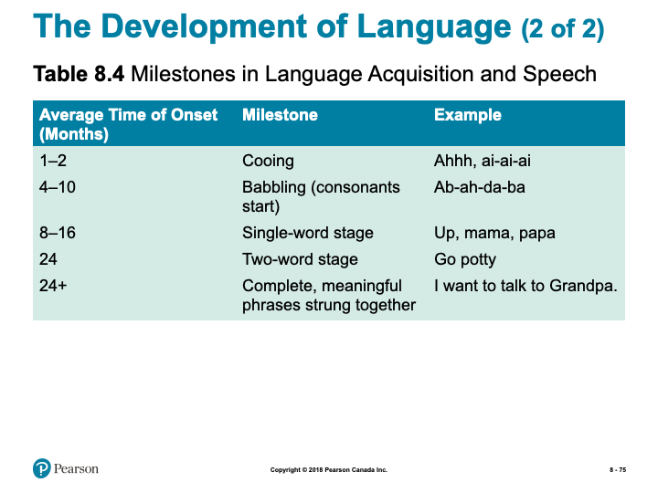
Slide showing - Milestones in Language Acquisition and Speech
Sensitive Periods for Language
- Sensitive period
- Brains are primed to develop language skills
- Ability fades starting seventh year
- Same with sign language
- Brains are primed to develop language skills
The Bilingual Brain
- Costs
- Smaller vocabulary
- Word access
- Smaller vocabulary
- Benefits
- Executive functions
- Health benefits
- Executive functions
Working the Scientific Literacy Model: Genes and Language (1 of 4)
- What do we know about genes and language?
- Language evolved to solve problems
- Number of genes involved
- Language evolved to solve problems
- Which scientific evidence supports a genetic basis of language?
- FOXP2 gene
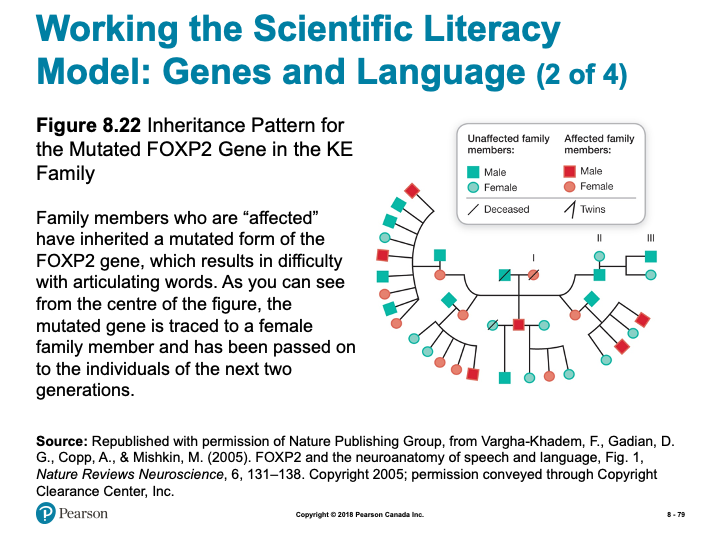
Slide showing - Inheritance Pattern for the Mutated FOXP2 Gene in the KE Family
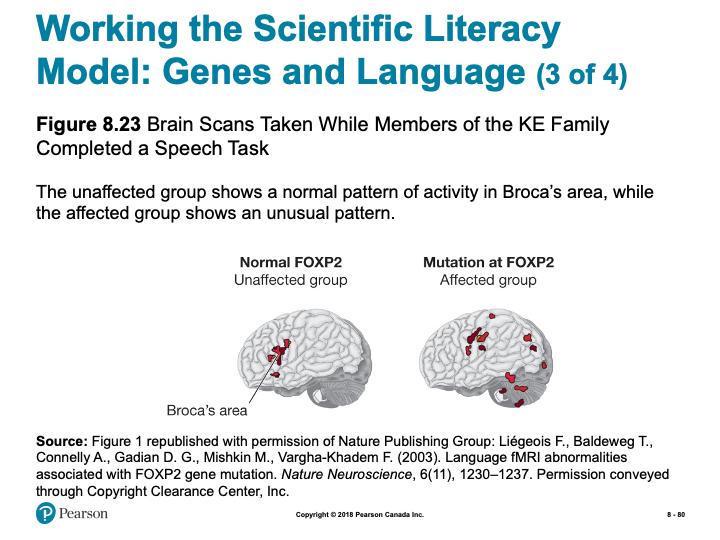
Slide showing - Brain Scans Taken While Members of the KE Family Completed a Speech Task
Working the Scientific Literacy Model: Genes and Language (4 of 4)
- Can we critically evaluate this evidence?
- Many genes work together
- FOXP2 not unique to humans
- Language is unique to humans
- Many genes work together
- Why is this relevant?
- Links between genes and language
Can Animals Use Language?
- Chimpanzee Viki
- Cross-fostered (p. 324)
- Four words
- Cross-fostered (p. 324)
- Chimpanzee Washoe
- ASL
- 200 signs
- Generalized words
- 200 signs
- ASL
- Bonobo Kanzi
- Lexigrams
- 350 symbols
- 3,000 spoken words
- 350 symbols
- Lexigrams
Note: the slides are intended to supplement the information found in your textbook. If you are having trouble viewing them, they can also be downloaded by scrolling to the bottom of the screen and clicking on the “Unit 1- Slides” link.*
Learning Activities:
Chapter 2 Review Quiz
- Practice Quiz to self-assess your own comprehension of important terms from Chapter 2.
- Not for formal evaluation.
Problem Solving Activity
- Solve some problems by utilizing some of the cognitive strategies we learned about in this topic.
Problem Solving Practice
- Explore problem solving activities and reflect on the strategies you incorporate as you discover solutions.
Introduction to Visualization
- Article introduces visualization and provides an opportunity to practice this skill.
Learning Lab Preparation
- Each topic will provide a question or scenario for you to consider prior to attending your Learning Lab. Be sure to carefully consider each prompt as you will be expected to contribute to the group discussion.
1.1 What is Psychology
We begin our course with a quick challenge: In your own words, define “psychology.”
According to your definition, how is psychology different from other academic areas that would study humans (for example, philosophy, literature, or history)? If you said “Pyschology is different because it uses the scientific method”- give yourself a pat on the back
You will begin your study of the scientific method by reading your textbook. The parable below (from Philipchalk’s Social Psychology textbook), however, helps illustrate the scientific method with three “helpful” approaches to a problem, including a simple experiment:
Once upon a time there were three brothers. One day while they were working in their father’s field, they saw an old man coming along the road. The old man greeted them, and then struggled on along the road, limping terribly. After that, every day at the same time, the brothers greeted the old man and watched as he hobbled by. When a month had passed, they were so impressed that they each did something. The first brother wrote a compelling story about perseverance in the face of the ravages of old age. It encouraged many people. The second brother painted a moving portrait of the old man, stooped over and limping along. People were inspired. The third brother, who had observed the old man very closely, asked him one day if he could exchange shoes with him. The old man was surprised, but he gladly agreed. When the old man walked away he did not limp. The next day the third brother gave the old man his shoes back and watched as he limped on his way. On the third day, the brother again exchanged shoes with the old man. Then he took the old man’s shoes to a shoemaker and had them repaired. When the brother gave them back to the old man he was delighted. The old man put on the shoes, thanked the brother, and walked away without a limp.
Although each brother made a positive contribution, the third brother solved the man’s problem because he discovered its cause. To do this, he used the scientific method and he conducted an experiment (Philipchalk, 1994).
I think psychology is one of the most interesting areas of study there is, first, because it studies people, people like you and me, and we’re interesting Second, I like psychology because it is so broad. Psychologists, as you will soon see, study everything from nerve conduction in single cells, all the way to the influence of groups on our behaviour—and everything in between. Finally, psychologists don’t just speculate and theorize, they look for evidence for their ideas. If they don’t find sufficient evidence, they change their ideas; and I like that. Which leads us back to the scientific method and how psychology began.
1.2 Thinking and Problem Solving
Thinking
“So God created man in his own image, in the image of God created he him; male and female created he them.” (Genesis 1:27)
“I will praise thee; for I am fearfully and wonderfully made.” (Psalm 139:14)
The human image of God means many things. It seems that one aspect of this image is our thinking ability, including our ability to solve problems and speak. How important is our thinking ability in our reflection of God’s image? What does your answer mean for people with less ability? What about people who lose abilities due to accident or disease (e.g., Alzheimer’s patients)?
Algorithms & Heuristics
Algorithms and heuristics can be confusing. An algorithm is a guaranteed route to a solution, but it may be the long way around to success. If you knew a person lived somewhere in a large residence hall, an algorithm for finding that individual would be to knock on every door until you located the person. Heuristics, on the other hand, suggest that you would first ask friends where to locate the person, or check a list, then knock on the appropriate door to locate the person. Another way to think of heuristics is the phrase “rule of thumb.” Can you think of some rules of thumb that you have learned from your various job experiences? They may have to do with how long to cook a hamburger, or when to refill a machine, or how to get a date.
Consider the following example and explanation taken from Invitation to Social Psychology by Ron Philipchalk:
In the second part of the book, they tell you how to crack a safe. There are all kinds of ninny-pinny, dopey things, like “It might be a good idea to try a date for the combination, because lots of people like to use dates.” Or “Think of the psychology of the owner of the safe, and what he might use for the combination.” And “The secretary is often worried that she might forget the combination of the safe, so she might write it down in one of the following places—along the edge of her desk drawer, on a list of names and addresses . . .” and so on . . . .
I also did a certain amount of systematic study. For instance, a typical combination was 69-32-21. How far off could a number be when you’re opening the safe? If the number was 69, would 68 work? Would 67 work? On the particular locks we had, the answer was yes for both, but 66 wouldn’t work. You could be off by two in either direction. That meant you only had to try one out of five numbers, so you could try zero, five, ten, fifteen, and so on. With twenty such numbers on a wheel of 100, that was 8000 possibilities instead of the 1,000,000 you would get if you had to try every single number. . . .
I practiced all the time on my own safe so I could do this process as fast as I could and not get lost in my mind as to which number I was pushing and mess up the first number. Like a guy who practices sleight of hand, I got it down to an absolute rhythm so I could try the 400 possible back numbers in less than half an hour. That meant I could open a safe in a maximum of eight hours—with an average time of four hours. (Surely You’re Joking Mr. Feynman, p. 140)
Mr. Feynman’s safecracking system succeeds because he methodically works through every possible combination. By logical analysis he has discovered which 8,000 possibilities out of 1,000,000 he needs to try. We call this type of logical step-by-step procedure for solving problems an algorithm (Newell & Simon, 1972; Simon, 1981). If you use the correct algorithm your success is guaranteed.
But sometimes it can take a long time to discover the correct algorithm. And employing an algorithm is often time consuming. Mr. Feynman spent days developing his system and it took hours to open a safe. You could certainly open a safe much faster if you found the combination on the edge of the secretary’s drawer.
The shortcuts Mr. Feynman calls “ninny-pinny, dopey things” are examples of heuristics. Heuristics are rule-of-thumb strategies for solving problems, shortcuts we develop from our experience. Heuristics often help us eliminate improbable alternatives and guide us to the most likely solution to a problem. Despite his appreciation for algorithms, Mr. Feynman discovered heuristics can be useful. He found, for example, that safe owners often did not bother to change the factory set combination when they received a new safe. In one office building the temporary factory combinations 25-0-25 or 50-25-50 opened one safe in five
Algorithms and heuristics are examples of cognitive strategies—mental plans we use to make decisions and solve problems.
Learning Activities
Read and Reflect
In addition to the content above, you are also responsible for reading through the following:
Krause et. al (2018). Revel for An Introduction to Psychological Science, 2nd Canadian Edition. Chapter 8
While all of these pages may not relate directly to this unit’s discussion, consistent reading will help you keep pace, as well as provide necessary background knowledge when you need it.
Problem Solving Activity
In this lesson, we spent time exploring cognitive strategies used to solve problems and make decisions. We now have an opportunity to practice this on our own Take a look at the following problems and see if you can find a solution. As you work through the problems, think about what cognitive strategies you are implementing as you make each decision:
Problem A
- Take a look at the following Roman Numeral: IX
- Now add one line to the Roman numeral IX to make it six
Click here for the solution.
The answer is to add a curved line shaped like an “S” (i.e., “SIX”). In writing, the problem looks simple, but you might want to try it aloud on a friend. There is a mental set that one must add a straight line and have some form of Roman numeral on the page.Problem B
Your task is to plant trees on Arbor Day. You have ten trees that must be planted in five rows of four trees each. How would you plant the trees?
Click here for the solution.
The answer is that you would arrange them at the vertices and cross-points of a 5-pointed starProblem Solving Practice
Below is a website that provides more opportunity to work through, and solve, some problems. Specifically, this resource explores the idea of Assumptions and the role assumptions play when solving problems. Furthermore, this is a valuable resource as it also explores other important techniques to be implemented when solving problems.
Click on the following link and read through the information as you continue to practice your problem solving:
Learning Lab Preparation
Your Learning Lab for this unit will focus on group discussion as explore the topics of this unit in more detail. As you prepare for your Learning Lab, one possible scenario that discussion will focus on is below- please prepare some thoughts to share with the group:
In the largest sense, society is breaking into two classes:
The first class are people who know how to think. These people realize that most problems are open to examination and creative solution. If a problem appears in the lives of these people, their intellectual training will quickly lead them to a solution or an alternative statement of the problem. These people are the source of the most important product in today’s economy – ideas.
The second class, the vast majority of society, are people who cannot think for themselves. I call these people ‘idea consumers’ – metaphorically speaking, they wander around in a gigantic open-air mall of facts and ideas. The content of their experience is provided by television, the Internet and other shallow data pools. These people believe collecting images and facts makes them educated and competent, and all their experiences reinforce this belief. The central, organizing principle of this class is that ideas come from somewhere else, from magical persons, geniuses, ‘them.’
Consider the following prompts to help better prepare for the discussion:
- Do you agree or disagree with this claim?
- Do you know people that fit in the second category? What causes this difference? How might it be changed?
1.3 Cognitive Biases
As if the biases mentioned in the textbook are not enough, here are a few more to watch out for, taken from Invitation to Social Psychology by Ron Philipchalk.
The Gambler’s Fallacy
Jill and Bob are the parents of three boys. Jill is pregnant again, and she and Bob are hoping the baby is a girl. In fact, they are confident the baby must be a girl because their previous three children were boys. If you agree with Jill and Bob that the baby is more likely to be a girl than a boy, then you—along with Jill and Bob—may be committing the gambler’s fallacy. No matter how many boys have been born, the likelihood of a girl being born is the same as it always was, approximately 50 % (assuming no biological abnormality or medical intervention).
The gambler’s fallacy arises from our failure to recognize the independence of unconnected events. The result of a coin toss does not depend on the outcome of previous tosses; a child’s sex at conception is not affected by the sex of prior conceptions; the cards dealt in a hand are not influenced by the distribution of cards on the previous deal; and so on. Each event in these sequences is independent of the others, although we tend to think that somehow there must be a connection.
The Anchoring and Adjustment Heuristic
First impressions of a person exert a powerful influence on the way we interpret subsequent information about that person. This effect may be an example of a more general principle called the anchoring and adjustment heuristic. Information we use to establish a starting value (or anchor point) tends to be more influential in our decisions than subsequent information we use to adjust this value (Tversky & Kahneman, 1974).
Daniel Cervone and his colleagues found, for example, that initial success or failure on a task can establish an anchor for feelings of self-efficacy. Students who initially succeed on a task and later fail have higher feelings of self-efficacy than students who initially fail and later succeed even though their overall level of success is the same. Final judgments of self-efficacy are biased in the direction of initial judgments (Cervone & Palmer, 1990; Peake & Cervone, 1989).
Salespeople often use the anchoring and adjustment heuristic to their advantage. Some real estate agents routinely show their clients an over-priced and unattractive house first in order to set an anchor point which, in effect, says, “The kind of house you want is going to cost a lot.” Once established, this expectation of high price changes very slowly and the clients are relieved to find an acceptable house in their price range (Northcraft & Neale, 1987).
Car dealers too like us to set our sights high. Their so-called list price establishes an anchor or reference point that overshadows our subsequent evaluations, as I recently discovered. In looking for a certain model of car, I was attracted to a particular vehicle with an asking price of $3,800 (“reduced from $4,200”). I believed this price was too high, so I bargained with the vendor. Eventually, I bought the car for $2,800. Did the high original asking price affect my decision? Yes, it probably did. Subsequent events indicated I still paid too much. I later bought an identical model in only slightly poorer condition for $2,000. I was a victim of the anchoring and adjustment heuristic.
Contrast Effects
My car purchase also illustrates a related distortion in judgment, the contrast effect. In contrast to the original price of $4,200 my offer of $2,800 seemed like a bargain. John Lynch, Jr. and his colleagues (1991) found a similar effect with students. The students rated low-priced cars as less expensive when they were considered alongside high-priced cars (contrast effect), compared to when they were considered along with other low-priced cars (no contrast).
Research by Douglass Kenrick and his colleagues indicates that we also show contrast effects in evaluating other people. In one study (1980), male college students rated the attractiveness of potential blind dates. Subjects who gave their ratings after watching a TV show with attractive female actresses rated the potential dates as less attractive than did subjects who rated their potential dates before watching the show. In another study (1989), after viewing centerfold erotica, men found average women—and even their own wives—less attractive.
Heuristics & Biases
By now you may be wondering why we fall prey to so many cognitive biases and errors. Well don’t worry; our biases are actually a side effect of our cognitive efficiency. Most of our biases result from using heuristics, rules of thumb, or mental shortcuts that work very well. Sometimes they let us down, but overall, they improve the speed with which we handle mental problems—much like Mr. Feynman’s safe-cracking tricks. As we noted in the previous discussion, you could certainly open a safe much faster if you found the combination on the edge of the secretary’s drawer. However, you won’t always find the combination there, so limiting yourself to this approach would produce a kind of “cognitive bias” in your safe-cracking strategy.
RESOURCES: Online Articles of Interest
For additional information and examples, click on the link below:
Learning Lab Preparation
Another focus of our discussion during our Learning Lab for this unit, will focus on biases. In order to prepare for participation in this discussion, consider the guiding prompt below- be sure to have some thoughts to contribute to the discussion:
Give an example from your own experience of one of the cognitive biases, discussed here or in the textbook, that you have fallen prey to.
1.4 Language and Thought
Linguistic Relativity
Benjamin Whorf’s linguistic relativity hypothesis suggests that our language affects the way we see the world. Do you know any examples of weather terms, for example, that are unique to one area? Could knowing these terms help you to notice differences in weather that outsiders might not notice? What about in sports? Sports fans usually know terms to describe certain strokes or plays. Does knowledge of these terms affect perception? Can you think of some examples? What does it mean to “clothesline” someone, or “post-up,” or “birdie?”
Imaginary Practice
Mental practice is now widely accepted in many areas. The following excerpt is taken from the GolfPsych website. You may find further examples there as well.
“You can practice the mental aspects of your game anytime. We encourage our clients to do imagery practice of playing well in upcoming tournaments. This imaginary practice includes seeing the course, situation, doing a full mental pre-shot routine and seeing a good shot. You should also be feeling the way you do when you play your best. In addition, you should be practicing deep breathing and quieting your mind off-course. This is an extremely valuable tool that must be practiced to be effective. The mental game is much more than thinking positive thoughts. Take our Personality Assessment and get your own GolfPsych Report to receive our recommendations for you based on your personality and our research. Reading our book will also help you understand all aspects of a good mental game. During your practices and before your rounds you should also be practicing your mental skills.”
Learning Activity
Introduction to Visualization
In this Topic, we learned about the notion of mental practice. Below is an article that will take you through the process of visualization. Take some time to read the article and practice for yourself. Pay careful attention to your thoughts, your focus, your feelings as you engage in the process.
Learning Lab Preparation
The subject of our focus for this Topic has been on the power of language in influencing how we see the world. Our discussion during Learning Lab this week will focus on the importance of language in the Bible (and other religious writings) and how it “shapes” how we see the world.
To prepare for this discussion, consider the following prompt:
Give some examples of the importance of language in the Bible or other religious writings.
1.5 Animal Language
Language
As a Christian I am pleased to see in psychology the resurgence of interest in studying some of what Ronald Koteskey (1980) calls humanity’s “God-like” characteristics, creativity, imagery, and particularly language.
The use of words is extremely important in Christian scripture. God spoke the creation into existence; Jesus is called the Word; the significance of Babel and Pentecost are closely linked to the importance of language; and there is great power associated with an individual’s name. In addition, Christians have usually considered the ability to communicate with words to be part of the image of God in man. However, recently several researchers claim to have taught animals, usually chimpanzees or apes, to communicate through language. Using sign language, blocks, or keyboards and computer- generated voices, the animals have signaled their needs and even generated word combinations.
But is this truly language? There is no doubt that the animals are using symbols as signs to stand for objects and actions. However, there are significant questions being raised about the comparison with human language.
Christians need to think carefully about what they mean when they talk about the image of God in man. The area of human learning and psycholinguistics offers some intriguing questions for thoughtful Christians. What is the origin of human speech-is it learned (as Skinner would say) or largely innate (as Chomsky would say)? Is human speech unique? Do the studies of language in animals necessitate a redefinition of the uniqueness of man? (Based on Psychology and Christianity by Ron Philipchalk, p. 102)
RESOURCES: Online Articles of Interest
To add to our exploration of this topic, take a moment to read the following articles:
Learning Lab Preparation
Finally, take a moment to consider the following questions:
How important for our understanding of who we are as humans is the distinctiveness of our language ability? Is it a sign of the image of God?
Be prepared to share your thoughts during discussion at your Learning Lab.
Assessment
While there is no “formal” assignment that you will be responsible for submitting for Unit 1, you will be expected to participate in discussion during your Learning Lab. Your facilitator will be providing a participation mark based on your contributions. Below is some information to consider prior to attending your Learning Lab:
Active participation in group exercises, reflection, and critical discourse is an essential component of this course. You are expected to show respect for all members of the course, both in your speech and actions. Contribute by actively observing and listening, raising thoughtful questions, examining relevant issues, building on others’ ideas, analyzing and evaluating the group’s thinking, synthesizing key points, and expanding the group’s perspectives. Take care not to dominate a conversation, giving space for others to speak. When in small groups help maintain the focus, flow, and quality of conversations, and take the initiative to invite others (particularly those who are quiet) to speak.
Rubric for Participation in Learning Labs
| Emerging (0-64%) | Developing (65-89%) | Mastering (90-100%) |
|---|---|---|
| Never to almost never: Demonstrates active listening (as indicated by disengaged body language and no to rare comments that build on others’ remarks),Initiates any contributions in class or small groups, Makes insightful or constructive comments, Helps maintain a supportive space for others to speak. | Sometimes to fairly often: Demonstrates active listening (as indicated by somewhat to often engaged body language and comments that build on others’ remarks), Initiates a contribution at least once in a class or small group discussion; Makes insightful or constructive comments, Helps maintain a supportive space for others to speak. | Very often to nearly always: Demonstrates active listening (as indicated by fully engaged body language and comments that build on others’ remarks), Initiates more than one contribution in a class or small group discussion, Makes insightful or constructive comments, Creates a space for others to speak and takes initiative to include others. |
Checking your Learning
Before you move on to the next unit, check that you are able to:
- Define key terminology related to principles of scientific research, research designs, and statistics.
- Explain the five characteristics of quality scientific research, and the pros and cons of descriptive, correlational, and experimental research designs.
- Determine how biases might influence the outcome of a study and how experiments help demonstrate cause-and-effect relationships.
- Apply the concepts of reliability and validity to examples and concepts of experimental methods to research examples.
- Assess whether anecdotes, authority figures, and common sense are reliably truthful sources of information.
- Understand what it means for variables to be positively or negatively correlated and how and why psychologists use significance tests.